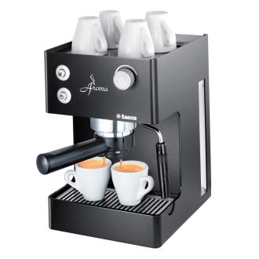
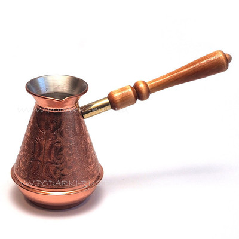
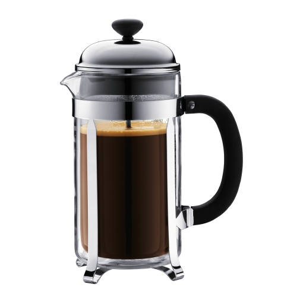
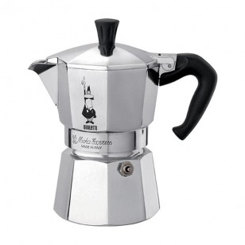
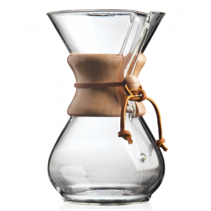

100% арабика
Вес:250 гр.
Регион происхождения:Латинская Америка
Степень обжарки:Светлая
Уникальный кофе из высокогорного района Эквадора. Обладает превосходным ароматом, хорошо сбалансированным, богатым вкусом, характерной легкой горчинкой с дымной ноткой, слегка кисловатым с мягким ореховым тоном.
Мы рекомендуем Вам следующие способы приготовления, максимально раскрывающие все самые лучшие ароматические и вкусовые качества данного сорта.
Эспрессо – кофе, с которым миллионы людей встречают каждое свое утро. Для многих именно эспрессо ассоциируется с отменным качеством, непревзойденным ароматом и превосходным слегка терпким вкусом. И это неслучайно, ведь эспрессо – это «начало начал», именно на его основе готовят многие другие виды кофе.
Для приготовления качественного напитка используются свежесмолотые зерна кофе. При этом рекомендуется хорошо измельчать зерна (до 0,15 мм), но исключая образование слишком мелкой фракции. В противном случае кофе будет иметь жженый привкус с горечью. Слишком грубый помол наделит напиток кислым послевкусием. Зерна для приготовления эспрессо не рекомендуется держать в кофемашине более 1-го дня, поскольку при взаимодействии с кислородом кофе теряет свои вкусовые качества.
Существует несколько способов дозировки кофе – это автоматическая дозировка, когда бармен пользуется настройками кофемолки и помол «в рожок». Обычно бункер для кофе в кофемашине остается пустым после приготовления напитка. Поэтому рекомендуется использовать второй способ дозировки. Для приготовления эспрессо можно использовать разную посуду: темпер, кофемашина, холдер, кофейная пара.
Формирование кофейной таблетки происходит вследствие прессования кофе. Для этого холдер слегка опирают на столешницу и прессуют кофе темпером, прилагая небольшое усилие. Процесс прессовки желательно проводить только 1 раз. При повторном прессовании готовый напиток не будет обладать желаемым вкусом и ароматом.
Если таблетка спрессована правильно, она будет иметь ровную форму. При этом ободок холдера должен быть чистым, исключая наличие на нем кофейных крошек. Проверить правильность процесса приготовления просто – достаточно перевернуть холдер. Если таблетка не выпадает, то она приготовлена правильно.
Для приготовления эспрессо пролив воды включают сразу после установки в группу холдера с таблеткой. Если этого не сделать, то кофе сразу начнет пригорать. Время приготовления кофе занимает 3 – 5 минут, температура составляет 98 – 100 º С. Для эспрессо используют только подогретые чашки.
Экстракция кофе занимает примерно 25 секунд. В процессе пролива воды обязательно нужно смотреть за показаниями датчика давления, стрелка которого должна находиться на отметке в 9 атмосфер.
Порция эспрессо составляет 40 мл. При этом нужно регулировать скорость наполнения чашки. Если стандартную посуду наполнять в течение 10 – 15 секунд, тогда следует уменьшить величину помола, если время наполнения чашки увеличить до 30 секунд и более – помол нужно увеличить.
Существует масса способов приготовления кофе. Однако эксперты рекомендуют для начала научиться готовить кофе в турке. И, несмотря на то, что данная методика считается самой простой, даже такой способ приготовления ароматного напитка имеет массу нюансов. Остановимся на классическом рецепте приготовления.
Для приготовления кофе рекомендуется использовать медную турку с узким горлышком.
Количество кофе напрямую зависит от того, какой крепости напиток Вы хотите получить. Также немаловажную роль играет сорт используемого кофе. Обычно придерживаются следующей пропорции: 2 ч.л. кофе на 150 гр. воды. Улучшить качество готового напитка, наделить его дополнительным ароматом можно, используя, например, молотый имбирь (достаточно щепотки на турку).
При этом вода должна доходить до наиболее узкого участка горлышка посуды. Наличие свободного пространства позволит кофе во время приготовления подняться до нужного уровня, при этом – исключит перелив. В то время как вода в турке закипает нужно немного прогреть чашку, наполнив ее кипятком.
Следите, чтоб масса не закипела – это очень важно! Дело в том, что по мере закипания на поверхности массы образуется тоненькая корочка, которая позволяет сохранить аромат напитка, исключая его испарение из турки. Как только кофе начнет закипать, турку нужно снять с огня и подождать пока пенка осядет, затем вновь поставить на огонь. Эту манипуляцию нужно проделать 2 – 3 раза.
Готовый кофе будет иметь приятный вкус, легкое послевкусие и превосходный насыщенный аромат. Ваш кофе готов, но самое главное то, что он приготовлен правильно!
Кофе, приготовленный во френч-прессе, является довольно популярным и наиболее простым способом приготовления ароматного напитка. Френч-пресс представляет собой емкость (кружку), оснащенную ситечком для процеживания кофе и шомполом, при помощи которого осуществляется отжим готового напитка. Обычно такой кофе готовится на одного человека. О кофе френч-пресс говорят: «4 минуты и ароматный кофе готов!» Стоит отметить, что кофе получается очень крепким и ароматным, по крепости он опережает даже эспрессо.
Для приготовления кофе во френч-прессе используется наиболее крупный помол, предпочтительно использовать зерна средней обжарки. Именно такие зерна позволяют максимально раскрыть вкусовые качества напитка. Такой помол может обеспечить каждая домашняя кофемолка. К тому же зерна сильной обжарки используются для приготовления эспрессо.
При приготовлении кофе рекомендуется придерживаться пропорции 7 гр. на 100 мл воды. Отмерить необходимое количество кофе очень просто, поскольку 7 гр. кофе тонкого помола вмещается в обычную чайную ложку. Поскольку для френч-пресса требуется кофе грубого помола, то ложку следует набирать «с горкой». При желании можно проверить, насколько верно Вы отмерили количество кофе – накладывать кофе следует до начала ручки френч-пресса.
Заливать кофе нужно кипяченной водой (температура воды должна составлять примерно 95 – 98º С). Т.е. после того, как вода в чайнике закипела, нужно подождать несколько секунд и наполнить ею френч-пресс. Массу нужно тщательно перемещать и закрыть емкость. Настаивается кофе быстро – достаточно 4 минут. По истечению времени нужно спрессовать кофе, чтоб вся гуща опустилась вниз. Для этого нужно надавить на шомпол, вместе с которым также опускается ситечко. «Отжатый» кофе можно разливать по чашкам.
На поверхности кофе должна присутствовать легкая пенка, образованная из пузырьков углекислого газа. Наличие пенки свидетельствует о том, что кофе приготовлен правильно. Теперь попробуйте напиток, он не должен горчить, скорее он будет иметь легкую кислинку. Несмотря на то, что на вкус такой кофе кажется более крепким, нежели напиток, приготовленный в турке – это совсем не так.
Готовый напиток по своим вкусовым качествам немного напоминает кофе по-восточному. И даже, невзирая на то, что при прессовании вся гуща опускается вниз, сквозь ситечко все равно просачивается незначительная взвесь.
Гейзерная кофеварка (Мока) дает возможность быстро приготовить кофе в домашних условиях. При этом в кофе перед приготовлением можно добавлять различные специи. Это позволит разнообразить вкусовые качества и аромат готового напитка. Главное, что нужно помнить при работе с мока – это то, что такие кофеварки нужно использовать только при полной загрузке.
1. Сначала разбираем кофеварку на отдельные части, их у нее 3 (коллектор, сетчатый фильтр и нижняя колба). В нижнюю часть нужно налить холодную воду до уровня предохранительного клапана. Этот клапан выглядит в виде небольшого отверстия, через которое высвобождается пар, если вода сквозь молотый кофе не просочилась, т.е. если воды в кофеварке слишком много.
2. Сетчатый фильтр нужно наполнить с горкой кофе среднего или грубого помола (до 0,6 мм). Теперь разровняйте кофе, излишки ссыпьте. В фильтре должно присутствовать столько кофе, сколько в него вмещается – ни меньше, ни больше. Важно отметить, что прессовать (темперовать) кофе в данном случае не требуется, поскольку в гейзерных кофеварках вода проходит под небольшим давлением. К тому же прессование ухудшит вкус напитка, который приобретет горчинку, а сам кофе будет слишком горячим.
3. Соедините все части кофеварки в единую конструкцию (вставьте фильтр в нижний резервуар с водой и закрутите верхнюю колбу), они должны плотно прилегать друг к другу. Готовый кофе будет наполнять верхнюю часть кофеварки.
4. Поставьте мока на медленный огонь. Спустя несколько минут вода в нижнем резервуаре начнет закипать, постепенно проходя сквозь фильтр с кофе. По трубке жидкость будет попадать в верхнюю колбу.
5. Определить готовность напитка довольно просто. Кофеварка начнет издавать шипящие звуки – это капли воды, которые испаряются из нижнего резервуара. Огонь нужно выключить, поскольку кофе при наливании в чашки может «фыркать» и расплескиваться.
6. Как только напиток приготовлен нужно немного прогреть чашки, ополоснув посуду кипятком или подержав их в теплой воде. Теперь кофе можно наливать в чашки и наслаждаться его очаровательным вкусом и ароматом.
7. После использования кофеварку нужно обязательно разобрать, освободить фильтр от кофе. К слову, если кофейная таблетка в фильтре слишком плотная, в следующие разы нужно использовать меньшее количество кофе, если же она мягкая – Вы все сделали правильно. Кофеварку нужно вымыть и высушить, подготовив ее к следующему использованию. Уделите внимание клапану, через который выходит пар – он должен быть всегда свободным.
Готовить кофе в кемексе очень просто. Ведь фактически это чудо устройство все сделает самостоятельно. Минимум времени и сил, а напиток получается очень ароматным и вкусным.
1. Свежеобжаренные кофейные зерна нужно помолоть, добившись эффекта «среднего помола». Получить массу требуемого помола можно при помощи жерновой кофемолки. Использовать ножевые приборы не рекомендуется, поскольку они не обеспечивают равномерность помола.
2. Подготовьте кемекс и фильтр к работе. Для этого фильтр нужно сложить так, чтоб в результате получился конус со сторонами в 1 и 3 слоя. Далее бумажный фильтр помещают в верхнюю часть прибора, при этом трехслойная сторона фильтра должна располагаться ближе к носику колбы. После установки фильтра его следует обильно полить горячей водой. Эта процедура позволит прогреть кемекс и устранить из готовящегося напитка бумажный привкус. Как только вода полностью стекла сквозь фильтр в колбу, ее нужно слить через носик, не трогая при этом сам фильтр, который должен плотно прилегать к стенкам прибора.
3. Засыпьте кофе из расчета 42 гр. на 600 мл воды. В горке насыпанного кофе нужно сделать маленькое углубление. Это обеспечит более удобное наливание воды.
4. Слегка смочите поверхность кофе, используя примерно 50 мл воды. В этот момент начинается процесс предварительной экстракции. Воду следует добавлять очень плавно и аккуратно. Это позволит равномерно смочить весь кофе. Для этого используется вода, температура которой должна составлять 95º С.
5. В течение примерно 30 секунд вся налитая в кемекс вода впитается в кофе. Теперь можно заливать оставшуюся воду. Опять же воду следует наливать плавно и медленно, желательно двигаться по кругу, распределяя воду равномерно от края к центру фильтра. Воду нужно наливать не до самого края прибора, не доливая воду примерно на 2 пальца до верха. При этом нужно смотреть, что кофе не поменял цвет, на нем не должно присутствовать светлых или темных пятен.
6. Как только в кемексе начнет появляться сухой кофе, в него нужно долить всю оставшуюся воду (напомним, нам потребуется 600 мл воды).
7. Удалите из емкости фильтр после того, как вся вода просочиться сквозь кофе.
8. Теперь приготовленный кофе можно разливать по чашкам. Ваш свежеприготовленный кофе готов порадовать Вас и Ваших гостей приятным ароматом и неповторимым вкусом.